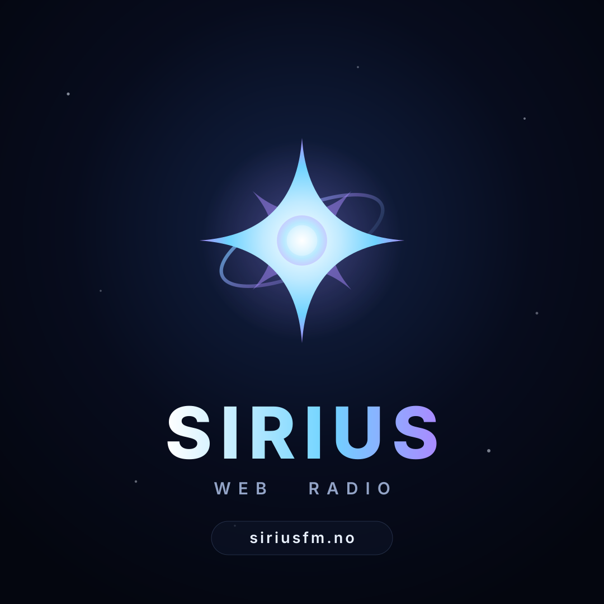
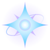
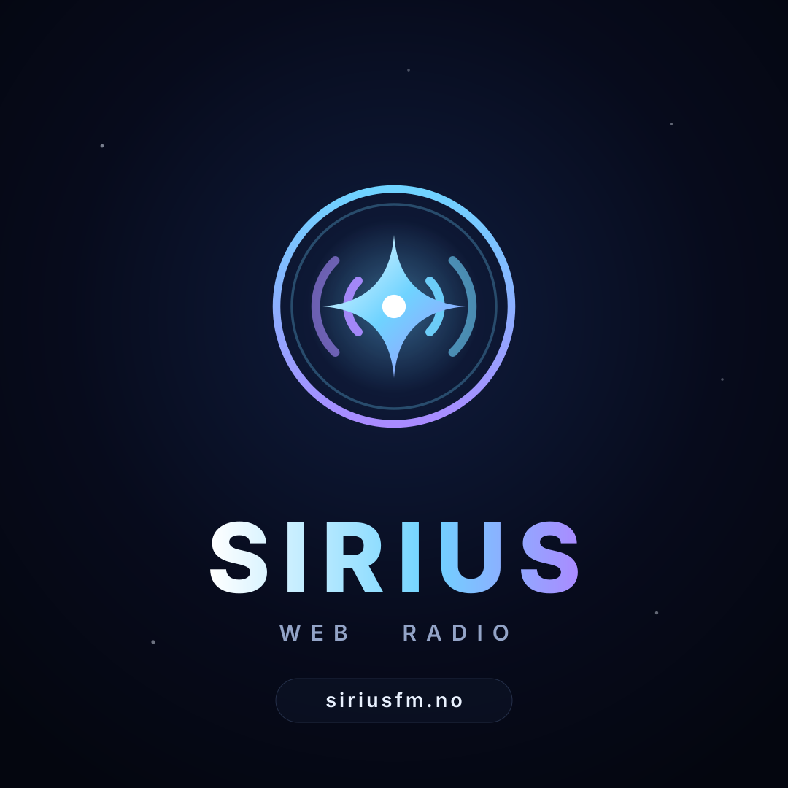
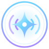
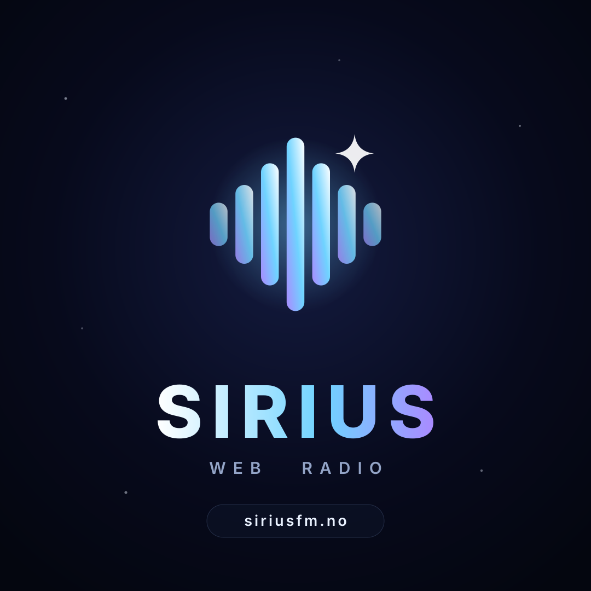

Alle tre bruker samme palett som siden: stjerneblå #6fd3ff, nebula-lilla #a98bff og romsvart #04060f. Se på dem i 32 px før du bestemmer deg – det er slik de faktisk vises i en feed.
Videreutvikling av dagens stjerne: skarpere spisser, glødende kjerne og en skrå orbitring som gir dybde. Mest «astronomi», sterkest gjenkjennelse mot dagens ikon.


Stjernen i en rund badge med sendebuer ut til hver side. Sier «radio» med én gang, og den runde rammen gjør at den holder formen i alle runde profilbilder.


Sju equalizer-stolper som tegner en diamant/stjerne, med et lite glimt på toppen. Mest moderne og «musikk», og den eneste som lett kan animeres når det spilles.

Si fra hvilken du vil ha (A, B eller C), så bytter jeg den inn som logo og favicon
på siden. PNG-knappene lager filen rett i nettleseren – de krever at siden kjøres via en
lokal server eller siriusfm.no, ikke direkte fra file://.